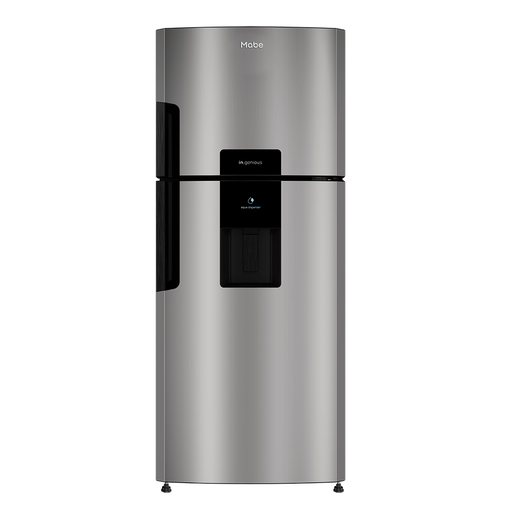

Por qué y cómo darle mantenimiento a tu refrigeradora Mabe, punto por punto, para alargar su vida útil y reducir el riesgo de fallas mayores en Guatemala.

El serpentín (la parrilla metálica de la parte trasera o inferior) es donde la refrigeradora libera el calor que extrae del interior. Cuando se cubre de polvo, pelusa o sal del aire, actúa como una manta que atrapa ese calor: el compresor tiene que trabajar más tiempo y con más esfuerzo para lograr la misma temperatura, lo que sube el consumo eléctrico hasta un 25% y acelera el desgaste del compresor. Basta con desconectar el equipo y pasar una aspiradora o un cepillo suave cada 4 a 6 meses.
Por qué importa: Es la razón número uno por la que una refrigeradora pierde eficiencia con el tiempo sin que parezca tener ninguna falla.
Haz la prueba con una hoja de papel: ciérrala a la mitad en la puerta y jala. Si sale con facilidad, el empaque ya no sella parejo. Esa fuga de aire frío, aunque parezca mínima, hace que el compresor arranque con más frecuencia de la necesaria y es una de las causas silenciosas de facturas eléctricas más altas.
Por qué importa: Un sello que ya no cierra bien obliga al compresor a compensar el frío que se escapa, aunque tú no notes nada raro.
La bandeja recolectora (debajo o detrás del equipo, según el modelo) junta el agua del ciclo de deshielo automático. Si no se limpia al menos dos veces al año, además del mal olor puede desbordarse y generar una fuga visible en el piso, sobre todo en las horas más calurosas del día.
Por qué importa: El agua estancada en un espacio cerrado y tibio es el ambiente perfecto para bacterias y malos olores.
Con un nivel de burbuja sobre la parte superior, revisa que el equipo esté parejo de lado a lado y de adelante hacia atrás. Si está inclinado, la puerta tiende a abrirse sola o a no sellar del todo por un lado, y el compresor termina compensando esa fuga de frío trabajando más tiempo del necesario.
Por qué importa: Un desnivel de pocos milímetros ya es suficiente para que la puerta no cierre parejo.
Sigue la frecuencia de cambio indicada por el fabricante (generalmente cada 6 meses), y redúcela si el agua de tu zona es más dura de lo normal. Un filtro saturado hace que el dispensador tarde más en llenar un vaso o que el hielo salga en trozos irregulares, y con el tiempo puede dañar la válvula que controla el paso de agua.
Por qué importa: Un filtro vencido no solo afecta el sabor del agua: también restringe el flujo y fuerza la válvula solenoide.
La forma más rápida de agendar: escríbenos ahora y te confirmamos disponibilidad para tu zona en minutos, sin llamadas ni esperas.
Escríbenos por WhatsApp o llama directamente. Respondemos de lunes a sábado, de 7:00am a 6:00pm.